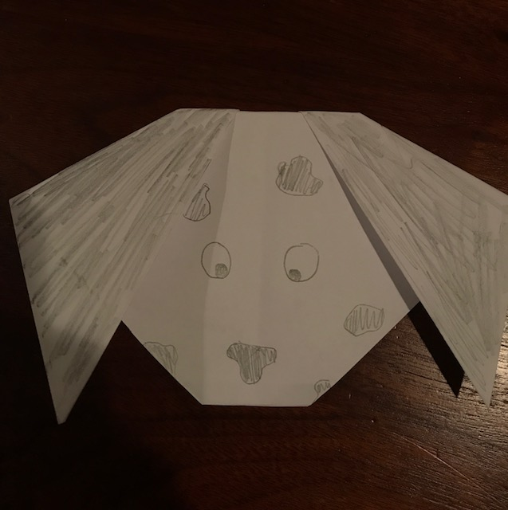

Some say that dogs are mans' best friend so who wouldn't want a small origami version of their best friend! Follow this tutorial to create your very own Origami Dog! All you need is the materials below and you're only a couple minutes from having one.

Required Materials
- A Square piece of paper (8.5"x11" is great)
- A dark marker or pencil
Optional Materials
- 2 Googly eyes
- Coloring utensils(crayons, colored pencils, markers, etc.)
Great! Once you've acquired all the materials you want, head on over to the
Tutorial to begin making your Origami Dog!.